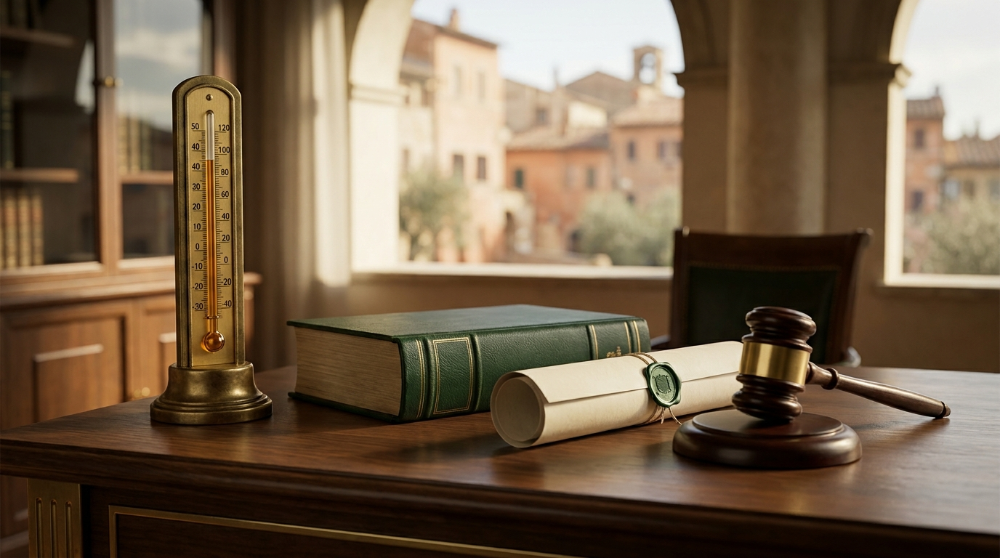

Caldo estremo e stop al lavoro: le ordinanze regionali 2026
Diverse Regioni hanno firmato ordinanze che vietano il lavoro all'aperto nelle ore di punta durante le ondate di calore. Il provvedimento incide sull'organizzazione dei cantieri e dell'agricoltura e si innesta sull'obbligo generale di tutela della salute dei lavoratori. Vediamo chi è interessato e quali adempimenti scattano per i datori.

Il fatto
Nell'estate 2026 più Regioni italiane hanno adottato ordinanze contingibili e urgenti che vietano il lavoro all'aperto in determinate fasce orarie, di norma tra le 12:30 e le 16:00, nelle giornate classificate ad alto rischio sulla mappa del calore del portale Worklimate dell'INAIL.
Il divieto colpisce in particolare l'edilizia, l'agricoltura, i cantieri e la logistica esposta al sole diretto. Si tratta di provvedimenti a tempo, attivati quando il livello di rischio è "alto" per i lavoratori sottoposti a sforzo fisico intenso.
Inquadramento normativo
Le ordinanze trovano fondamento nei poteri attribuiti ai presidenti di Regione in materia di sanità pubblica. Ma il vero baricentro è il decreto legislativo 9 aprile 2008, n. 81, il Testo Unico sulla sicurezza sul lavoro.
L'articolo 2087 del Codice civile impone al datore di adottare tutte le misure necessarie a tutelare l'integrità fisica dei lavoratori. È una norma "di chiusura": obbliga a intervenire anche oltre il dettato di legge, ogni volta che la tecnica e l'esperienza indichino un rischio. Il caldo estremo rientra in pieno in questo perimetro.
Il d.lgs. 81/2008 (artt. 28 e seguenti) richiede inoltre che il documento di valutazione dei rischi, il cosiddetto DVR, contempli anche il microclima e lo stress termico. Le ordinanze regionali, dunque, non creano un obbligo nuovo: rendono cogente e misurabile un dovere già esistente.
Implicazioni pratiche
Per il datore di lavoro il divieto non è un semplice consiglio. La violazione espone a sanzioni amministrative e, in caso di infortunio collegato all'esposizione al calore, a responsabilità penale per lesioni o, nei casi più gravi, per omicidio colposo.
L'inosservanza incide anche sul piano civilistico: il lavoratore che subisca un danno alla salute può agire per il risarcimento, e l'INAIL può esercitare l'azione di regresso verso l'impresa.
Sul fronte retributivo, lo stop nelle ore più calde non grava sul lavoratore. È attivabile la cassa integrazione ordinaria per eventi meteo, con causale dedicata che l'INPS riconosce in caso di temperature elevate che impediscono lo svolgimento delle lavorazioni all'aperto. La sospensione, quindi, non si traduce in perdita di reddito.
Il lavoratore conserva inoltre il diritto di astenersi dalla prestazione in presenza di pericolo grave e immediato, senza subire pregiudizio, ai sensi dell'art. 44 del d.lgs. 81/2008.
Cosa fare in concreto
- Verificare l'ordinanza regionale applicabile: i contenuti e le fasce orarie variano da Regione a Regione. Controllate la mappa del rischio sul portale Worklimate prima dell'inizio del turno.
- Aggiornare il DVR: integrate la valutazione dello stress termico, indicando misure organizzative concrete come riprogrammazione degli orari, rotazione delle mansioni, aree d'ombra e disponibilità di acqua.
- Attivare la CIG ordinaria per eventi meteo: predisponete la domanda all'INPS con la causale corretta per coprire le ore sospese senza penalizzare i lavoratori.
- Formare e informare il personale: documentate la consegna di istruzioni sui sintomi da colpo di calore e sulle procedure di emergenza. La prova della formazione è dirimente in caso di contenzioso.
- Conservare la tracciabilità: annotate giornate sospese, fasce orarie effettive e misure adottate. In sede di verifica o accertamento, la documentazione è l'unica difesa efficace.
Una nota di metodo
Le ordinanze hanno durata limitata e contenuti differenziati sul territorio. Un'impresa attiva in più Regioni deve gestire regimi diversi nello stesso periodo. Consigliamo di predisporre una procedura interna che colleghi il livello di rischio giornaliero alle azioni operative, così da reagire in tempo reale senza decisioni improvvisate.
La tutela della salute nei mesi estivi non è più un tema stagionale marginale: è un profilo strutturale della gestione del rischio d'impresa, destinato a consolidarsi negli anni a venire.
---
*Contributo informativo a cura di Tamburro & Partners - Avv. Giuseppe Tamburro. Non costituisce parere legale.*
Ogni storia di lavoro ha i suoi tempi.
Se gestisci HR e vuoi un confronto su contenzioso, ispezioni o licenziamenti, scrivi allo studio. Ti rispondiamo entro un giorno lavorativo.